A quieter workbench.
More readable, less repetitive, still unmistakably Pi. Keep the warm surfaces, editorial titles and compact chrome. Let the conversation—not the metadata—set the hierarchy.
26 real GPUI captures. 18 proposed screens. No production UI changes.
Actual screenshots were taken under Xvfb with isolated offline data. Proposed screens are static design studies, not implemented behavior. Click any image for its full resolution.
Start here: the complete 18-screen SVG · Browse every proposed screen · Full-sheet preview


The comparisons below highlight five changes; the full SVG also includes Sessions, Resources, Changes, Tree, Context, both search states, both New Session forms, Appearance and the idle state.
- Readable, not faint: 12px supporting text; higher contrast; fewer tiny capitals.
- Available at every width: requested details become a drawer, never a missing action.
- One thing in one place: deduplicate open sessions, status and inspector metadata.
- Useful width: shared gutters and fluid work surfaces; constrain prose, not tools or the composer.
- Predictable search: global palette and local filtering must not share hidden state.
01 · Keep the character. Reduce the noise.
One selected session, legible navigation, one live activity description and a quieter inspector. Same four title-bar icons. Keep explicit Steer, Follow-up and Stop actions.

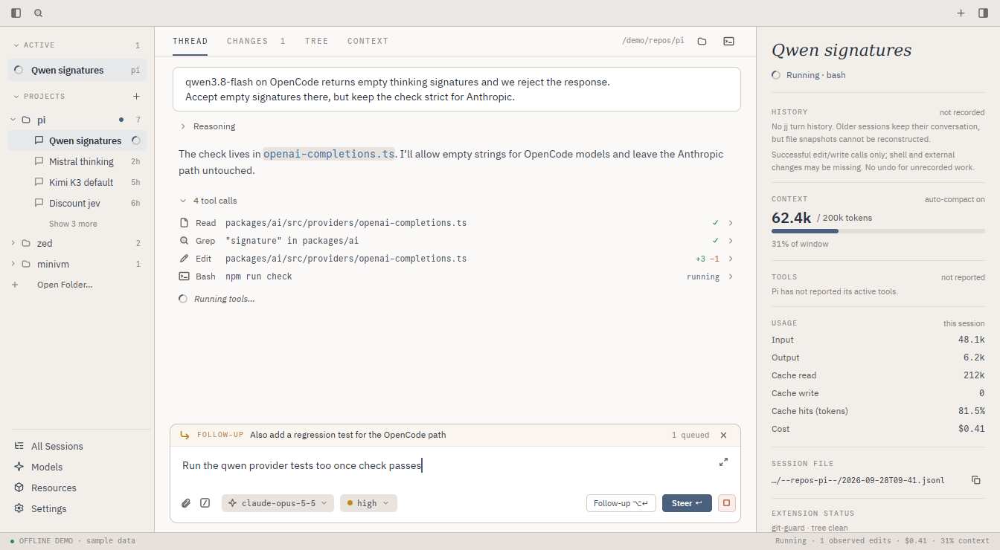


02 · Dark, but not washed out.
Retain Evening’s ink-blue surfaces. Make selected rows neutral charcoal rather than blue, and lift meaningful secondary text above decorative faint colors.

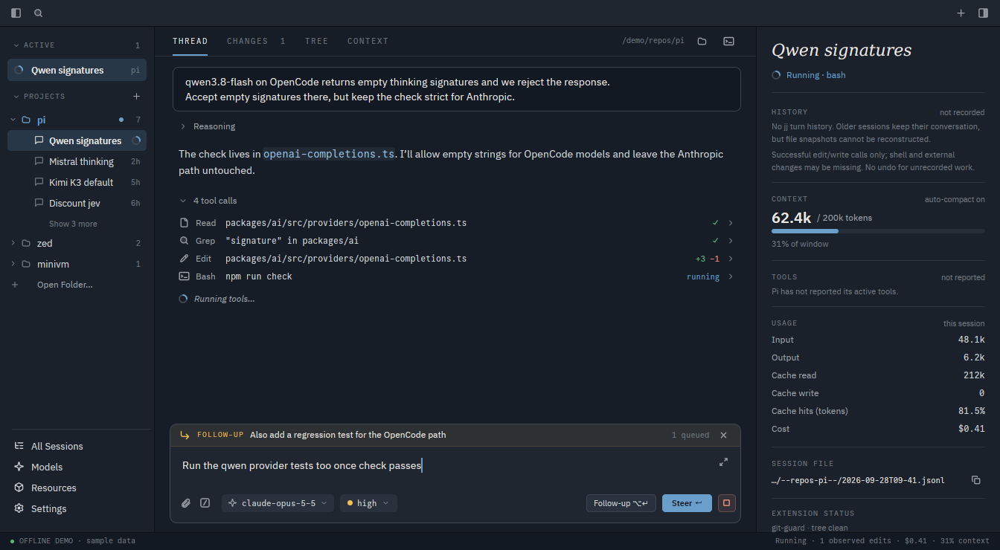


03 · Use the width. Keep prose readable.
The initial centered 760px column wasted 256px of usable width and was inconsistent with the other views. Revised: use the same 24px gutters everywhere, keep read-only prose comfortably narrow, and let tool output, diffs and the composer fill the work area. No additional panel is needed.

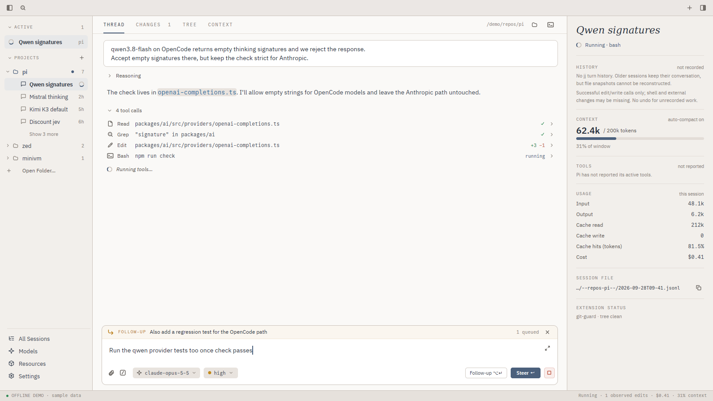


04 · Explain a setting next to its control.
Four simultaneous columns make a simple setting feel technical. Keep the categories, put useful descriptions inline, and make JSON keys and provenance optional detail. Keep user/project scope visible.

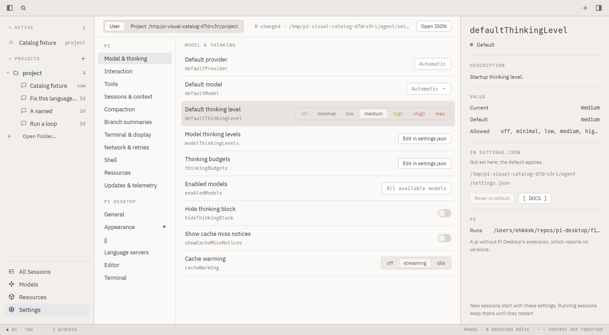


05 · Hide a panel, not its capabilities.
At 1000px, the current inspector stays hidden even after toggling it. The proposal overlays requested details instead of adding another squeezed column. Keep the primary action visible; inspection must never apply a model change.

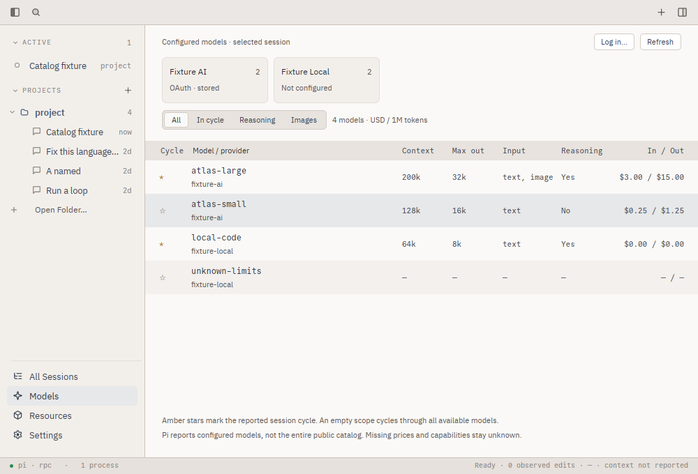


Measured, not guessed.
These are actual app captures. Dimension annotations below were added to a copy; the original remains untouched. The review also checked missing-data states, both dialog variants and the minimum window size.
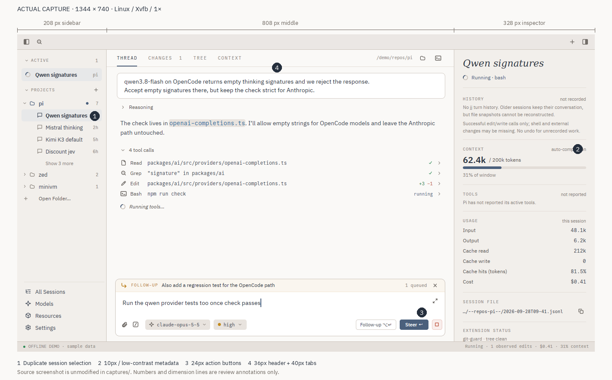

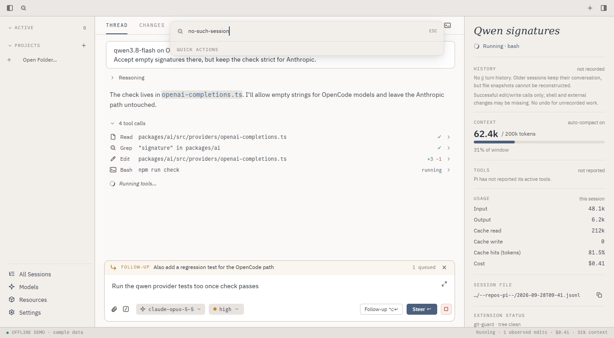

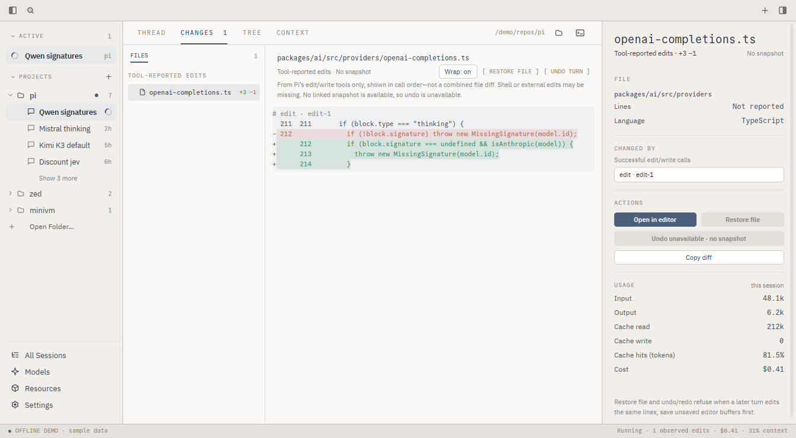

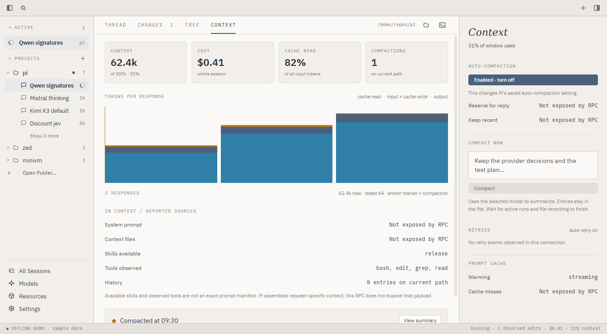

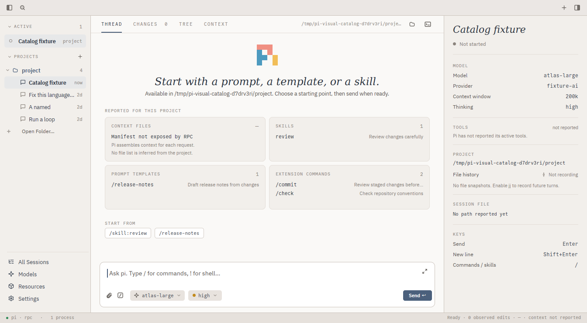

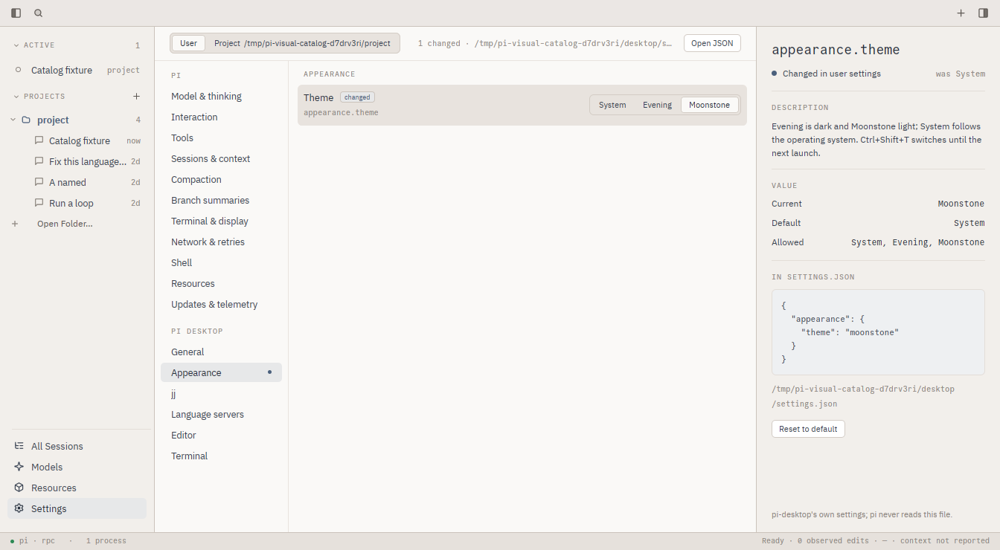

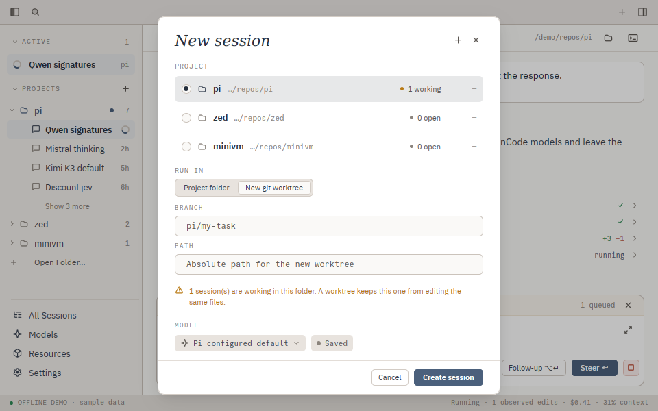
All 26 original captures
- Thread · light
- Thread · dark
- Search palette
- Search · no matches
- Changes
- Tree
- Context
- New Session
- New worktree
- Thread · 1600×900
- Thread · 1000×680
- Compact Thread · after inspector toggle
- New Session · 960×600
- Worktree · 960×600
- Idle session
- All Sessions
- Models · selected
- Resources · project
- Resources · selected skill
- Settings
- Settings · appearance
- Settings · dark
- Settings · compact
- Compact Settings · after inspector toggle
- Models · compact
- Resources · compact